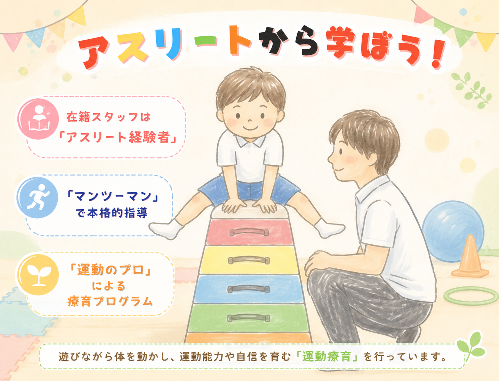
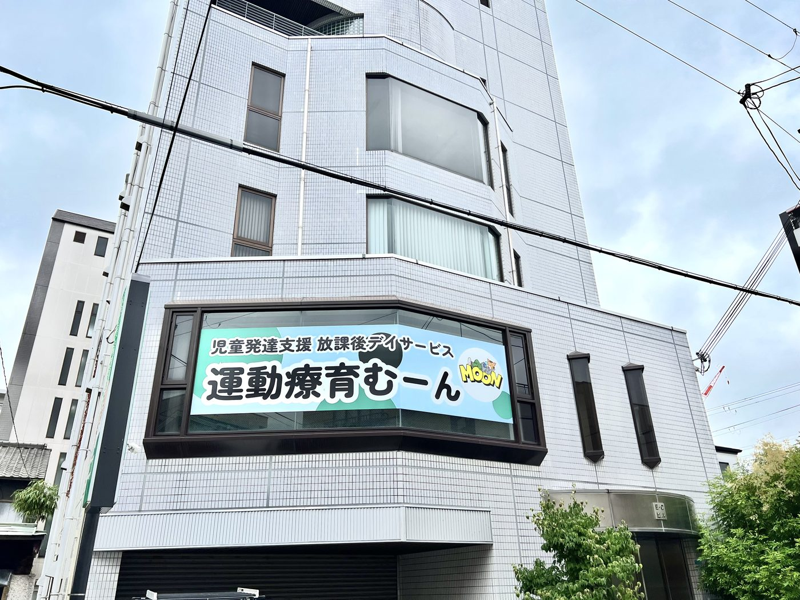
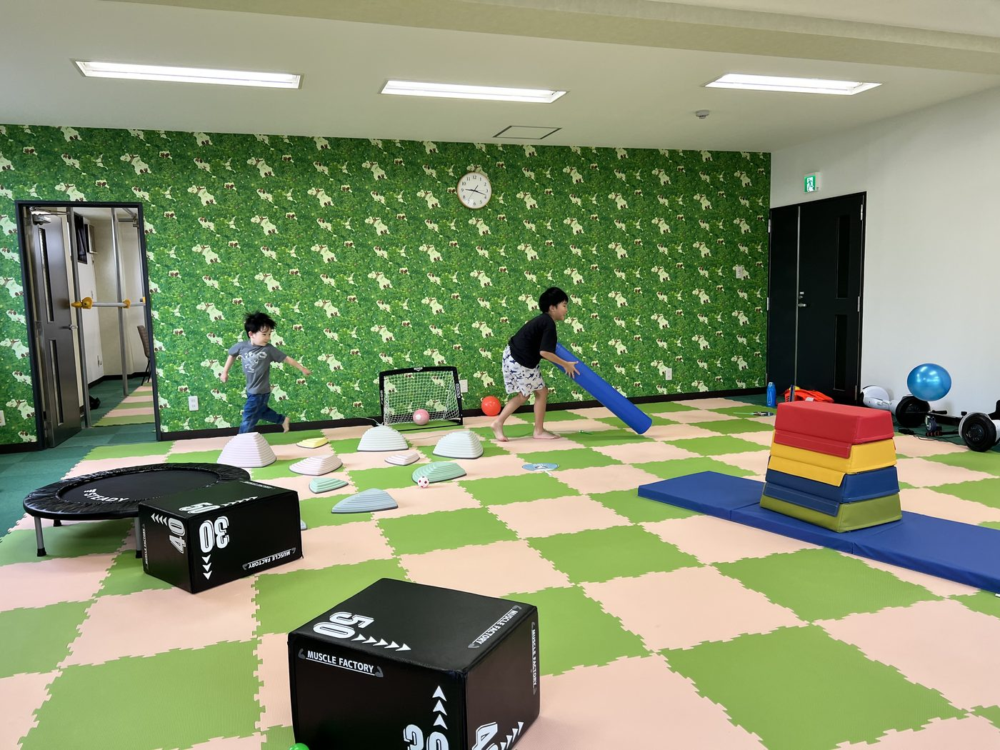
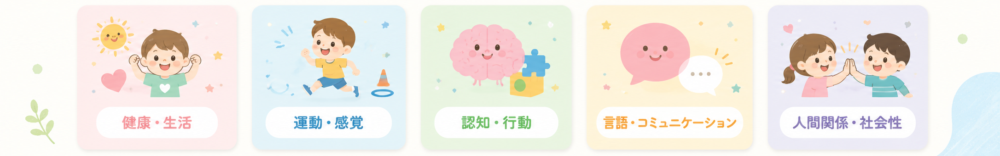
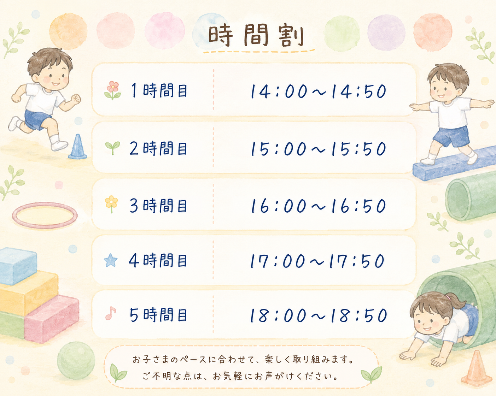

営業日：月曜〜土曜 13:00〜19:00
おやすみ：日曜・祝日・年末年始
※利用希望者様以外のご連絡はお控えください。

月〜土 13:00〜19:00 ／ 日・祝・年末年始 定休
運動療育むーんは、児童発達支援・放課後等デイサービスの中でも運動に特化した療育施設です。「日常生活で身体を動かす際の困りを克服したい！」「身体を思い切り動かしたい！」「運動神経を高めたい！」といった様々な運動に関わるひとりひとりのニーズにお応えするために全力を尽くします。
一般的な児童発達支援・放課後等デイサービスは、複数の児童・生徒に対し、1人の指導員が対応します。
しかし、運動療育むーんでは、１人の指導員がマンツーマンから２、３人の小集団で運動指導・療育を行います。療育の過程から結果までをしっかりと把握し、ひとりひとりの成長・上達スピードに合わせた系統的な指導を心がけます。
運動療育むーんの指導員は皆、運動経験豊富なアスリートです。それだけではなく、運動指導経験者、教諭免許保持者など様々な経験をもった運動のプロフェッショナルです。面談でお聞かせ頂いた内容から適切な療育を考えたり、ご要望にお応えさせて頂きます。スタッフの紹介はこちらでさせて頂いております。


運動療育むーんでは、１回５０分間の運動指導・療育を行います。その際には指導員がマンツーマンで付き添い、トレーニングの過程を見守り、指導します。児童・生徒の成長に合わせてプログラムを柔軟に変更し、ひとりひとりに合った療育を実現します。
運動という言葉から、一番に思いつくことはサッカーや陸上等のスポーツだと思います。
しかし、運動とは「身体を動かす全てのこと」です。歩いたり、座ったり、立ったり、バランスをとったりすることも運動ですし、ボールを転がす、投げる、受けることも運動です。
運動療育むーんでは、そういった「基本的な動作」の習得を大切にしています。基本的な動きを、楽しいトレーニングを通して身につけて欲しいと思います。
運動療育むーんは、体力や身体能力をアップさせたいというご希望も大歓迎です。基本的な動作を習得しながら、「運動不足を解消したい」「体力をアップさせたい」というご希望にも全力でお応えします。
本格的な陸上競技指導など、専門的なトレーニングを提供させて頂くことも可能です。児童・生徒の成長する姿を見ることができるのを楽しみにしています。
運動療育は運動能力を高めることはもちろんですが、支援の大きな目的は、子どもが将来日常生活や社会生活を円滑に営めるようにすることです。そのため運動プログラムを通して５領域（【健康・生活】【運動・感覚】【認知・行動】【言語・コミュニケーション】【人間関係・社会性】）の成長も目標としています。

おぎた ひろき
競技歴：陸上競技（25年）
・オリンピック日本代表
・世界選手権 3大会 代表
・日本選手権 優勝
・国民体育大会 優勝
・強度行動障害基礎研修修了
・米国認定機関(NESTA)認定 パーソナルトレーナー
はぎお しゅうと
競技歴：陸上競技（11年）
・西日本インカレ 優勝
・関西インカレ 優勝
・中・高校保健体育科教員免許
いぬい だいすけ
競技歴：陸上競技（14年）
・インターハイ 3位
・全日本中学 優勝
・関西実業団 3連覇
・小学校教諭1種免許
ひめの まお
競技歴：バドミントン（6年）
・大阪ベスト4
・理学療法士
さきやま りこ
競技歴：バレエ（18年）
・理学療法士
はやくも よしたか
・児童発達支援管理責任者
・レクリエーション中級指導者
・障がい者スポーツ指導員
・幼児体育指導員2級
・行動援護従業者養成研修修了
きたおか まなか
・行動援護従業者養成研修修了
スタッフ募集要項はこちらからご確認ください。
募集要項を見る初めての方に向けて、児童発達支援・放課後等デイサービスのご説明をさせていただきます。
児童発達支援は、障がいのある（もしくはその心配のある）未就学児を対象にした通所施設です。0から6歳までの就学前の子どもを対象に療育支援を行います。
放課後等デイサービスは、障がいのある（もしくはその心配のある）子どもたちが、放課後や長期休暇中に療育を受ける場として、または、居場所やレスパイトケア（ご家族に代わり一時的にケアを代替する）の充実のために創設された通所施設です。７歳から１８歳までの就学中の方を対象に療育支援を行います。
児童発達支援や放課後等デイサービスなどの「障害児通所支援」を利用するために、お住まいの市区町村から交付される証明書を通所受給者証といいます。（大阪市では、お住まいの区の保健福祉センター保健福祉課で申請手続きすることができます。）
通所受給者証にはサービス種別、利用する子どもと保護者の住所、氏名、生年月日、サービスの種類、支給量（利用可能日数）、負担上限月額などが記載されます。この受給者証を取得することで、利用料の９割が自治体によって負担され、1割の自己負担でサービスを利用できます。
手帳の有無は問わず、こども相談センター、医師等により療育の必要性が認められた児童も施設のご利用が可能です。

受給者証により、サービス料金の原則1割を負担して頂きます。しかし、所定の所得に応じて月額負担額が決められており、1ヶ月分以上の上限額を超えてご利用になられても、それ以上の負担は発生しません。
上限額は所得により、以下の3段階です。
※月額上限額。
これを超える負担は発生しません。
運動療育むーんでは、福祉・介護職員処遇改善加算（Ⅰ）と福祉・介護職員等特定処遇改善加算（Ⅰ）の両方、介護職員等ベースアップ等支援加算を取得しています。
福祉・介護職員の賃金改善のために平成24年に創設され、昇給につながるキャリアアップの制度のしくみを構築し、職員の資質を向上させることや労働環境を整備することで職員の定着をはかることで加算を充実させてきました。
運動療育むーんでは、キャリアパス要件の（Ⅰ）〜（Ⅲ）を満たしており、職員の資質の向上や労働環境の改善に努めています。
現行の福祉・介護職員等特定処遇加算に加え、令和元年度から福祉・介護職員等特定処遇加算が創設されました。従来の処遇改善加算に加え、キャリア（経験・技能）のある職員に対し、さらなる処遇改善を行うものです。
運動療育むーんでは、主に資格取得者に対し処遇改善を行なっております。
令和８年２月実施のアンケート、自己評価表を公開いたします。
ご協力いただきありがとうございました！
今後もより良い施設作りに取り組んでいきますので、今後とも、よろしくお願いいたします。
〒534-0012
大阪府大阪市都島区御幸町１−６−２２ 2階
谷町線 野江内代駅 より徒歩10分
谷町線 都島駅 より徒歩15分
JR線 城北公園通駅 より徒歩17分
近隣コインパーキングをご利用ください
月曜〜土曜 13:00〜19:00
定休日：日曜・祝日・年末年始
2755220627
10名
「うちの子に合う？」「受給者証の取り方がわからない」
どんな小さなことでもお気軽にご相談ください。
※利用希望者様以外のご連絡はお控えください
※月〜土 13:00〜19:00 受付
障害福祉サービス等情報公表システム（WAM NET）にて当事業所の情報を公表しています